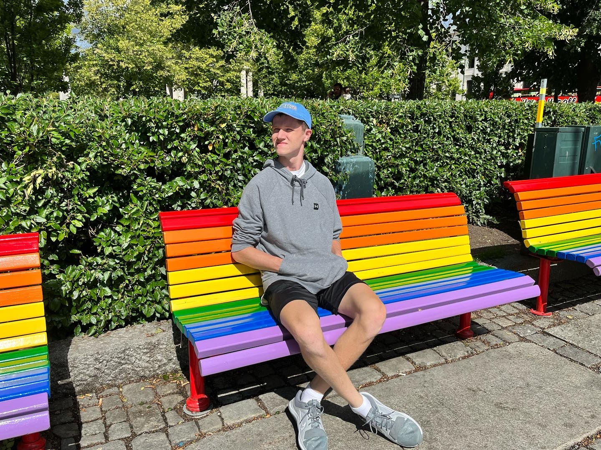
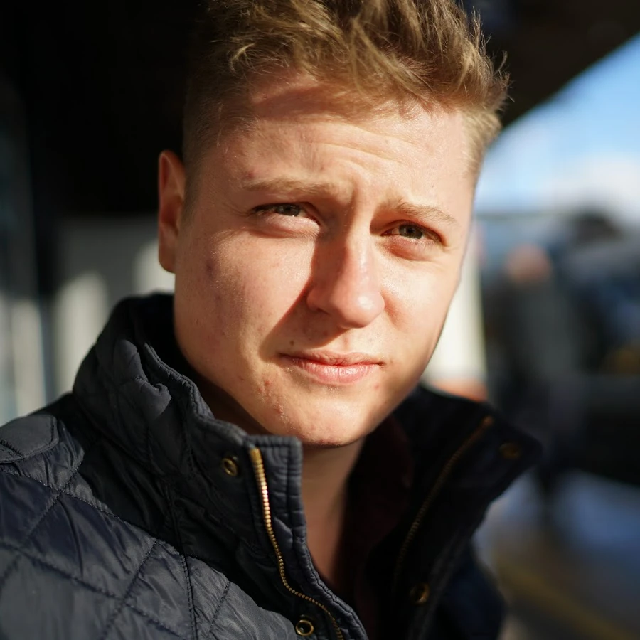
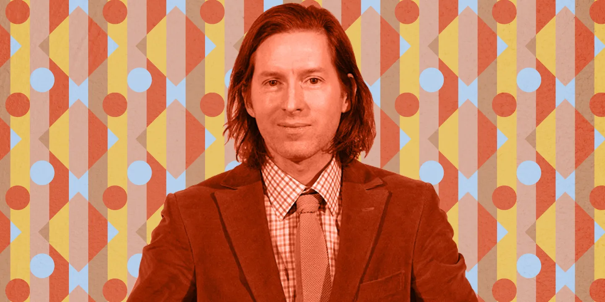
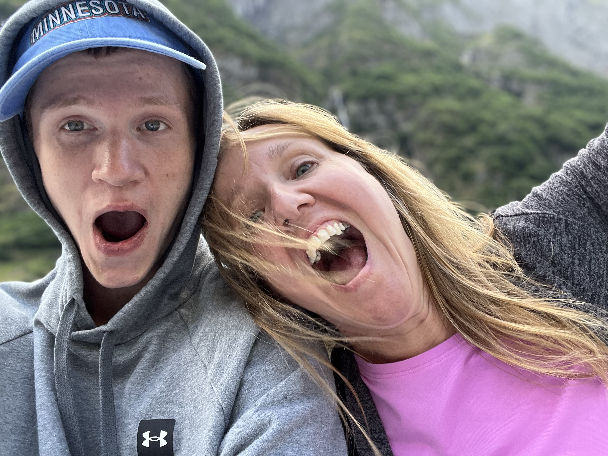

About Me

I am a college student studying to get a degree in Marketing, with a double minor in Management and Multimedia Communications. I enjoy all sorts of creative avenues with a big leaning towards photography, video production, web design, and graphic design. Most of my time has been dedicated to working on my photography and video portfolio, but I do work on my other hobbies in the little spare time I have.
My Biggest Inspirations
Some of my biggest inspirations for my work include youtubers such as Mumbo Jumbo, Film artists such as Wes Anderson, and of course, my own Mom.

Image Credits
Mumbo Jumbo, aka Oli, is a british Youtuber and filmaker whom I discovered through his in game tutorials on redstone, a very complex element of the game. He also has a second channel where he does more short films and vlog style content, which has really stood out to me. overall, this man is where my love of video production and film started, and I would love to thank him a million times over for that.
Wes Anderson

Image Credits
Wes Anderson, known for his creative and almost simplistic directing style for his films, is a major inspration of mine. Some of his highest profile films include "Fantastic Mr. Fox", "The Grand Budapest Hotel", and "Isle of Dogs". All of these films have inspired me and pushed me in the direction of film making. All in all, Wes Anderson will continue to inspire me as I go forward in my creative endeavors.
My Mom - Sarah

My mom, Sarah Peterson, has been a big inspiration for practically my whole life, from my love of photography, to my fascination with code, to my love for music, all of that was inspired by her. She is an entrepraneur who owns her own photography and design business, and is a singer and songwriter on the side. Overall, she has been a huge inspiration and has made me who I am as a person today.